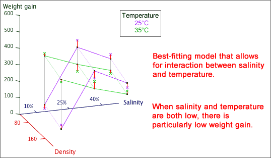

Interaction
It must be stressed again that the no-interaction model does not always fit factorial data. Sometimes the effect of one factor is different for different levels of the others. Interactions in models with 3 or more factors are however difficult to understand, so we only briefly mention their existence here.
Shrimp culture
Scientists conducted a factorial experiment to assess how shrimp growth was affected by temperature, salinity and the density of shrimps in the tanks. The table below shows the average 4-week gain in weight per shrimp (mg) from the post-larval stage for each combination of factor levels.
| 80 shrimps/litre | 160 shrimps/litre | ||||
|---|---|---|---|---|---|
| Salinity | 25°C | 35°C | 25°C | 35°C | |
| 10% | 73 | 349 | 86 | 364 | |
| 25% | 482 | 330 | 208 | 316 | |
| 40% | 397 | 205 | 243 | 281 | |
